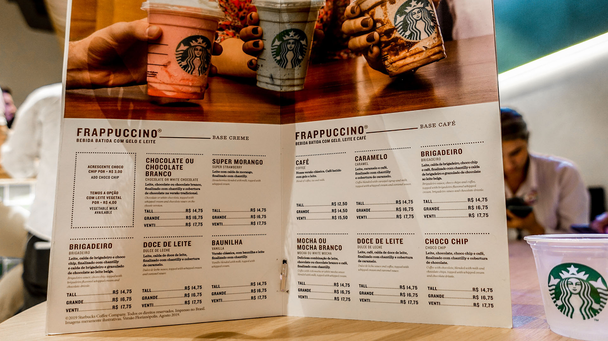

Diariamente um cliente recebe uma bebida de um barista da Starbucks.
É só um breve momento – apenas uma mão passando um copo por sobre o balcão
para outra mão estendida.
Mas é uma conexão.
Tudo o que fazemos procura respeitar essa conexão – desde nosso compromisso
com o café de melhor qualidade do mundo até a forma
como nós interagimos com
nossos clientes e nossas comunidades para conduzir nosso negócio de modo
responsável.
Desde o princípio, há mais de cinquenta anos, quando éramos uma única loja, todo
lugar a que fomos, todo lugar que tocamos, nós
tentamos deixar um pouco melhor
do que encontramos.